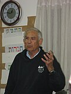

Warum diese Seite existiert – und was sie bewusst nicht ist
Diese Seite ist keine freie Presseschau „empörender Zitate“. Jedes Zitat unten stammt ausschließlich aus einem von zwei Originaldokumenten, die selbst bereits gezielt Politiker-Aussagen als Beleg für eine mögliche genozidale Absicht (dolus specialis) zusammengetragen haben – nicht aus einer eigenen Recherche in Zeitungsarchiven oder sozialen Medien. Das ist ein bewusst enger Quellenkanon: Beide Dokumente sind selbst zitierfähige Rechts- bzw. UN-Primärquellen, in denen jede Aussage ihrerseits mit einer eigenen Fundstelle (Fußnote zu Original-Video, -Tweet oder -Presseartikel) belegt ist.
Aus dem Albanese-Bericht „Anatomy of a Genocide“ (A/HRC/55/73), Absatz 50
Der Bericht selbst leitet die folgende Liste so ein: „Hochrangige israelische Amtsträger mit Befehlsgewalt haben erschütternde öffentliche Aussagen gemacht, die auf eine genozidale Absicht hindeuten, darunter die folgenden“ (Abs. 50, sinngemäße Übersetzung). Es folgen sieben im Bericht namentlich benannte Personen (a) bis (g):
| Person | Amt (zum Zeitpunkt der Aussage) | Datum | Kernaussage |
|---|---|---|---|
| Isaac Herzog | Staatspräsident | 12./13.10.2023 | „eine ganze Nation … verantwortlich“ / „wir werden ihnen das Rückgrat brechen“ |
| Benjamin Netanyahu | Ministerpräsident | 28.10. / 24.12.2023 | Palästinenser als „Amalek“ und „Ungeheuer“ bezeichnet |
| Yoav Gallant | Verteidigungsminister | 9./10.10.2023 | „menschliche Tiere“, „volle Offensive“, „Gaza wird nie wieder das sein, was es war“ |
| Daniel Hagari (kein Politiker, IDF-Sprecher) | Armeesprecher | 10.10.2023 | Fokus solle auf „maximalem Schaden“ liegen |
| Avi Dichter | Landwirtschaftsminister | 11.11.2023 | „die Gaza-Nakba“ |
| Amichai Eliyahu | Heritage-Minister | 5.11.2023 | Angriff mit „Nuklearwaffen“ (Teilzitat) |
| Revital Gottlieb | Knesset-Abgeordnete (Likud) | 17.10.2023 | „Macht Gaza dem Erdboden gleich. Ohne Gnade!“ |
Isaac Herzog, Staatspräsident
Karte umdrehen1 in diesem Abschnitt dokumentierte Aussage (12./13. Oktober 2023) — Wortlaut, Übersetzung und Fundstelle(n) stehen direkt unter dieser Karte.
Foto: Avi Ohayon, Government Press Office, CC BY-SA, Wikimedia Commons
Pressekonferenz vor internationalen Medien (berichtet von ITV News am 13.10.2023): „Da draußen ist eine ganze Nation, die verantwortlich ist. Diese Rhetorik von ahnungslosen, unbeteiligten Zivilisten stimmt nicht. Das stimmt absolut nicht. … und wir werden kämpfen, bis wir ihnen das Rückgrat gebrochen haben.“ Im Original: „It's an entire nation out there that is responsible. It's not true this rhetoric about civilians not aware not involved. It's absolutely not true. … and we will fight until we break their backbone.“
Albanese-Bericht A/HRC/55/73, Abs. 50(a), Fn. 151.
Benjamin Netanyahu, Ministerpräsident
Karte umdrehen2 in diesem Abschnitt dokumentierte Aussagen (28. Oktober 2023 · 24. Dezember 2023) — Wortlaut, Übersetzung und Fundstelle(n) stehen direkt unter dieser Karte.
Foto: Avi Ohayon, Government Press Office, CC BY-SA 3.0, Wikimedia Commons
Videoansprache, unmittelbar vor dem Einmarsch der Bodentruppen: bezeichnete Palästinenser mit dem biblischen Begriff „Amalek“. Der Bericht selbst zitiert dazu die einschlägige biblische Passage 1. Samuel 15,3 im Volltext: „Now go and smite Amalek, and utterly destroy all that they have, and spare them not; but slay both man and woman, infant and suckling, ox and sheep, camel and ass“ (dt.: „Geh nun hin und schlage Amalek und vollstrecke den Bann an allem, was ihm gehört. Verschone niemanden, sondern töte Mann und Frau, Kind und Säugling, Rind und Schaf, Kamel und Esel“).
Albanese-Bericht, Abs. 50(b), Fn. 152–153.
„Weihnachtsbotschaft“ (gov.il): bezeichnete Palästinenser als „Ungeheuer“ („monsters“).
Albanese-Bericht, Abs. 50(b), Fn. 154.
Yoav Gallant, Verteidigungsminister
Karte umdrehen2 in diesem Abschnitt dokumentierte Aussagen (9. Oktober 2023 · 10. Oktober 2023) — Wortlaut, Übersetzung und Fundstelle(n) stehen direkt unter dieser Karte.
Foto: Avi Ohayon, Government Press Office, CC BY-SA, Wikimedia Commons
bezeichnete er Palästinenser als „menschliche Tiere“ („human animals“).
Albanese-Bericht, Abs. 50(c), Fn. 155.
kündigte er eine „volle Offensive“ auf Gaza an, habe „alle Beschränkungen aufgehoben“, und erklärte: „Gaza wird nie wieder das sein, was es war“ („Gaza will never return to what it was“).
Albanese-Bericht, Abs. 50(c), Fn. 156.
Daniel Hagari, Sprecher der israelischen Armee (kein gewählter Politiker)
Karte umdrehen1 in diesem Abschnitt dokumentierte Aussage (10. Oktober 2023) — Wortlaut, Übersetzung und Fundstelle(n) stehen direkt unter dieser Karte.
Foto: IDF-Sprechereinheit, CC BY-SA 3.0, Wikimedia Commons
offizielles Pressebriefing der israelischen Armee: der Fokus solle auf „maximalem Schaden“ („maximum damage“) liegen – vom Bericht als Beleg für eine Strategie unverhältnismäßiger, unterschiedsloser Gewalt gewertet. Hagari ist kein gewähltes politisches Amt, sondern Armeesprecher; er wird hier trotzdem genannt, weil der Bericht selbst ihn in derselben Aufzählung „hochrangiger Amtsträger mit Befehlsgewalt“ führt.
Albanese-Bericht, Abs. 50(d), Fn. 157.
Avi Dichter, Landwirtschaftsminister
Karte umdrehen1 in diesem Abschnitt dokumentierte Aussage (11. November 2023) — Wortlaut, Übersetzung und Fundstelle(n) stehen direkt unter dieser Karte.
Foto: Ronen Horesh / Knesset-Archiv, CC BY-SA 4.0, Wikimedia Commons
Fernsehinterview, mit Verweis auf die Nakba von 1948: bezeichnete Israels Vorgehen als „die Gaza-Nakba“ („the Gaza Nakba“).
Albanese-Bericht, Abs. 50(e), Fn. 158.
Amichai Eliyahu, Heritage-Minister (Kulturerbe)
Karte umdrehen1 in diesem Abschnitt dokumentierte Aussage (5. November 2023) — Wortlaut, Übersetzung und Fundstelle(n) stehen direkt unter dieser Karte.
Foto: Knesset-Archiv, CC BY-SA 3.0, Wikimedia Commons
rief er dazu auf, Gaza mit „Nuklearwaffen“ („nuclear bombs“) zu treffen. Hinweis zur Quellenlage: Der Bericht gibt hier nur das Teilzitat in Anführungszeichen wieder, keinen vollständigen Satz – dieser wird deshalb auch hier nicht ergänzt.
Albanese-Bericht, Abs. 50(f), Fn. 159.
Revital Gottlieb, Knesset-Abgeordnete (Likud)
Beitrag in sozialen Medien: „Bringt Gebäude zum Einsturz!! Bombardiert unterschiedslos!! … Macht Gaza dem Erdboden gleich. Ohne Gnade! Diesmal gibt es keinen Raum für Gnade!“ Im Original: „Bring down buildings!! Bomb without distinction!!...Flatten Gaza. Without mercy! This time, there is no room for mercy!“
Albanese-Bericht, Abs. 50(g), Fn. 160.
Aus der ICJ-Klageschrift Südafrikas (Abs. 101–107): Regierungsmitglieder
Die Klageschrift widmet diesen Aussagen einen eigenen Abschnitt (III.D), den sie selbst wie folgt einleitet: Aussagen „hochrangiger israelischer Amtsträger, einschließlich des Staatspräsidenten, des Ministerpräsidenten und des Verteidigungsministers“, bildeten Beleg für die „besondere Zerstörungsabsicht“ (dolus specialis) im Sinne der Völkermordkonvention (Abs. 101, sinngemäß). Die folgenden neun Personen sind dort in dieser Kategorie namentlich benannt.
Benjamin Netanyahu, Ministerpräsident
TV-Ansprache: kündigte an, „überall mit Kraft vorzugehen“ („operate forcefully everywhere“).
ICJ-Klageschrift, Abs. 101, Fn. 439.
„Wir schlagen unsere Feinde mit beispielloser Wucht …“ („We are striking our enemies with unprecedented might . . .“).
ICJ-Klageschrift, Abs. 101, Fn. 440.
(zu diesem Zeitpunkt hatten israelische Luftangriffe laut UNICEF bereits über 2.670 Palästinenser getötet, darunter 724 Kinder): Soldaten „verstehen das Ausmaß der Mission“ und seien bereit, „die blutrünstigen Ungeheuer zu besiegen, die sich erhoben haben, um uns zu vernichten“ („to defeat the bloodthirsty monsters who have risen against [Israel] to destroy us“).
ICJ-Klageschrift, Abs. 101, Fn. 442.
Ansprache vor der Knesset: „ein Kampf zwischen den Kindern des Lichts und den Kindern der Finsternis, zwischen Menschlichkeit und dem Gesetz des Dschungels“ („a struggle between the children of light and the children of darkness, between humanity and the law of the jungle“).
ICJ-Klageschrift, Abs. 101, Fn. 443.
Brief an Soldaten (auch auf X veröffentlicht): „Dies ist der Krieg zwischen den Söhnen des Lichts und den Söhnen der Finsternis. Wir werden in unserer Mission nicht nachlassen, bis das Licht die Dunkelheit besiegt — das Gute wird das extreme Böse besiegen, das uns und die ganze Welt bedroht.“
ICJ-Klageschrift, Abs. 101, Fn. 444.
„Weihnachtsbotschaft“: „wir stehen Ungeheuern gegenüber, Ungeheuern, die Kinder vor den Augen ihrer Eltern ermordet haben … Dies ist nicht nur ein Kampf Israels gegen diese Barbaren, es ist ein Kampf der Zivilisation gegen die Barbarei.“ Ausführlichere Fassung derselben Aussage, die oben im Albanese-Abschnitt bereits als Teilzitat „Ungeheuer“ gezählt ist – hier nicht doppelt gezählt.
ICJ-Klageschrift, Abs. 101, Fn. 445.
vor dem Einmarsch der Bodentruppen: „ihr müsst euch erinnern, was Amalek euch angetan hat, sagt unsere Heilige Schrift. Und wir erinnern uns“ („you must remember what Amalek has done to you, says our Holy Bible. And we do remember“) — wiederholt im Brief vom 3.11.2023. Dieselbe Aussage wie oben im Albanese-Abschnitt („Amalek“) – hier nicht doppelt gezählt.
ICJ-Klageschrift, Abs. 101, Fn. 446–448.
Isaac Herzog, Staatspräsident
Karte umdrehen1 in diesem Abschnitt dokumentierte Aussage — Wortlaut, Übersetzung und Fundstelle(n) stehen direkt unter dieser Karte.
Foto: Avi Ohayon, Government Press Office, CC BY-SA, Wikimedia Commons
Pressekonferenz vor internationalen Medien (berichtet 13.10.2023 durch ITV News): „Da draußen ist eine ganze Nation, die verantwortlich ist. Diese Rhetorik von ahnungslosen, unbeteiligten Zivilisten stimmt nicht. Das stimmt absolut nicht. … und wir werden kämpfen, bis wir ihnen das Rückgrat gebrochen haben.“ (dieselbe Aussage wie oben im Albanese-Abschnitt, hier nicht doppelt gezählt). 15. Oktober 2023, Tweet: „wir werden das Böse ausreißen, damit es Gutes für die ganze Region und die Welt geben wird“ („we will uproot evil so that there will be good for the entire region and the world“). Die Klageschrift merkt zusätzlich an (ohne eigenes Zitat), der Präsident sei einer von mehreren Israelis gewesen, die handschriftliche „Botschaften“ auf für Gaza bestimmte Bomben geschrieben hätten.
ICJ-Klageschrift, Abs. 101, Fn. 449–451.
Yoav Gallant, Verteidigungsminister
Karte umdrehen1 in diesem Abschnitt dokumentierte Aussage — Wortlaut, Übersetzung und Fundstelle(n) stehen direkt unter dieser Karte.
Foto: Avi Ohayon, Government Press Office, CC BY-SA, Wikimedia Commons
Lageupdate der israelischen Armee: „wir verhängen eine vollständige Belagerung über Gaza. Kein Strom, kein Essen, kein Wasser, kein Treibstoff. Alles ist geschlossen. Wir kämpfen gegen menschliche Tiere, und wir handeln entsprechend.“ Dieselbe Aussage wie oben im Albanese-Abschnitt („human animals“) – hier nicht doppelt gezählt.
ICJ-Klageschrift, Abs. 101, Fn. 452.
habe „alle Beschränkungen aufgehoben“ und gegenüber Truppen an der Gaza-Grenze erklärt: „Gaza wird nicht mehr das sein, was es vorher war. Wir werden alles auslöschen. Wenn es nicht einen Tag dauert, dauert es eine Woche. Es wird Wochen oder sogar Monate dauern, wir werden jeden Ort erreichen.“ Dieselbe Aussage wie oben im Albanese-Abschnitt – hier nicht doppelt gezählt.
ICJ-Klageschrift, Abs. 101, Fn. 453–454.
kündigte eine „umfassende Antwort“ an und habe „jede Beschränkung entfernt“.
ICJ-Klageschrift, Abs. 101, Fn. 455.
Itamar Ben-Gvir, Minister für nationale Sicherheit
Karte umdrehen1 in diesem Abschnitt dokumentierte Aussage (10./11. November 2023) — Wortlaut, Übersetzung und Fundstelle(n) stehen direkt unter dieser Karte.
Foto: Wikimedia Commons, CC BY-SA 3.0
(die Klageschrift datiert die Klarstellung selbst auf den 10.11.2023, die zugehörige Fußnote verweist auf ein Interview vom 11.11.2023 – diese kleine Abweichung zwischen Fließtext und Fußnote wird hier transparent benannt), Fernsehinterview auf Channel 12: „Um klar zu sein: Wenn wir sagen, die Hamas solle vernichtet werden, meint das auch diejenigen, die feiern, die unterstützen und die Süßigkeiten verteilen — sie sind alle Terroristen, und auch sie sollen vernichtet werden.“ Im Original: „[t]o be clear, when we say that Hamas should be destroyed, it also means those who celebrate, those who support, and those who hand out candy — they're all terrorists, and they should also be destroyed.“
ICJ-Klageschrift, Abs. 101, Fn. 456.
Israel Katz, zum Zeitpunkt der Aussage Minister für Energie und Infrastruktur
Karte umdrehen2 in diesem Abschnitt dokumentierte Aussagen (13. Oktober 2023 · 12. Oktober 2023) — Wortlaut, Übersetzung und Fundstelle(n) stehen direkt unter dieser Karte.
Foto: Shaul Tairam, CC BY 4.0, Wikimedia Commons
Amtszusatz zur Präzision: Katz war im Oktober 2023 Minister für Energie und Infrastruktur sowie Mitglied des politisch-sicherheitspolitischen Kabinetts; laut dem Albanese-Bericht (verfasst März 2024) war er zu diesem späteren Zeitpunkt bereits Außenminister.
Tweet: „Der gesamten Zivilbevölkerung in Gaza wird befohlen, sofort zu gehen. Wir werden gewinnen. Sie werden keinen Tropfen Wasser und keine einzige Batterie bekommen, bis sie die Welt verlassen.“
ICJ-Klageschrift, Abs. 101, Fn. 457.
Tweet: „Humanitäre Hilfe für Gaza? Kein Stromschalter wird umgelegt, kein Wasserhydrant geöffnet, und kein Treibstoff-Lkw wird einfahren, bis die israelischen Verschleppten nach Hause zurückgekehrt sind. Menschlichkeit für Menschlichkeit. Und niemand wird uns Moral predigen.“
ICJ-Klageschrift, Abs. 101, Fn. 458.
Bezalel Smotrich, Finanzminister
Karte umdrehen3 in diesem Abschnitt dokumentierte Aussagen (8. Oktober 2023 · 31. Dezember 2023 · 25. November 2024) — Wortlaut, Übersetzung und Fundstelle(n) stehen direkt unter dieser Karte.
Foto: Avi Ohayon, Government Press Office, CC BY-SA 3.0, Wikimedia Commons
Kabinettssitzung: „Wir müssen einen Schlag versetzen, wie man ihn seit 50 Jahren nicht gesehen hat, und Gaza niederringen.“ Im Original: „[w]e need to deal a blow that hasn't been seen in 50 years and take down Gaza.“
ICJ-Klageschrift, Abs. 101, Fn. 459.
Interview mit Army Radio (Galei Zahal): „Wenn in Gaza 100.000 oder 200.000 Araber sein werden und nicht 2 Millionen, wird das gesamte Gespräch über ‚den Tag danach‘ anders aussehen.“ Im Original: „If in Gaza there will be 100,000 or 200,000 Arabs and not 2 million[,] the entire conversation on 'the day after' will look different.“
Haaretz, Jerusalem Post und Times of Israel, alle 31.12.2023 (drei unabhängige Presseorgane, Radiomitschnitt selbst nicht abgehört); nicht in Albanese/ICJ.
Rede vor dem Yesha-Rat (Siedlerdachverband): „Es ist möglich, eine Situation zu schaffen, in der Gaza in zwei Jahren weniger als die Hälfte seiner heutigen Bevölkerung hat“ („It's possible to create a situation in which Gaza will have less than half its current population within two years“), verbunden mit der Forderung nach „freiwilliger Migration“ auch für das Westjordanland.
Times of Israel, Liveblog vom 25.11.2024 (Redemitschnitt selbst nicht gesichtet); nicht in Albanese/ICJ.
Amichai Eliyahu, Heritage-Minister (Schreibweise auch „Amihai Eliyahu“, Namensvariante je nach Quelle)
Karte umdrehen2 in diesem Abschnitt dokumentierte Aussagen — Wortlaut, Übersetzung und Fundstelle(n) stehen direkt unter dieser Karte.
Foto: Knesset-Archiv, CC BY-SA 3.0, Wikimedia Commons
Facebook-Post: „Der Norden des Gazastreifens, schöner als je zuvor. Alles ist gesprengt und dem Erdboden gleichgemacht, einfach eine Augenweide … Wir müssen über den Tag danach sprechen. In meiner Vorstellung werden wir Grundstücke an all jene übergeben, die über die Jahre für Gaza gekämpft haben, und an jene, die aus Gusch Katif vertrieben wurden“ (ehemalige israelische Siedlung).
ICJ-Klageschrift, Abs. 101, Fn. 460.
argumentierte gegen humanitäre Hilfe: „wir hätten den Nazis auch keine humanitäre Hilfe gegeben“, und „es gibt so etwas wie unbeteiligte Zivilisten in Gaza nicht“.
ICJ-Klageschrift, Abs. 101, Fn. 461–462.
Zur Nuklearwaffen-Äußerung vom 5. November 2023: Die Klageschrift selbst gibt hier keinen durchgehenden Wortlaut wieder, sondern beschreibt nur zusammenfassend, er habe einen Nuklearangriff „ins Spiel gebracht“, und verweist auf einen hebräischsprachigen Sendungstitel; sie vermerkt, der Minister sei danach vom Ministerpräsidenten von Kabinettssitzungen suspendiert worden. Für den wörtlichen wenn auch nur teilweisen Wortlaut dieser Aussage ist deshalb der Albanese-Bericht (Teilzitat „Nuklearwaffen“, siehe oben, dort bereits gezählt) die belastbarere Fundstelle.
Avi Dichter, Landwirtschaftsminister
Karte umdrehen1 in diesem Abschnitt dokumentierte Aussage (11. November 2023) — Wortlaut, Übersetzung und Fundstelle(n) stehen direkt unter dieser Karte.
Foto: Ronen Horesh / Knesset-Archiv, CC BY-SA 4.0, Wikimedia Commons
Fernsehinterview, mit Verweis auf die Nakba von 1948: „Wir rollen jetzt tatsächlich die Gaza-Nakba aus.“ Im Original: „[w]e are now actually rolling out the Gaza Nakba.“ Dieselbe Aussage wie oben im Albanese-Abschnitt – hier nicht doppelt gezählt.
ICJ-Klageschrift, Abs. 101, Fn. 463.
Nissim Vaturi, stellvertretender Knesset-Sprecher, Mitglied des Ausschusses für auswärtige Angelegenheiten und Sicherheit
Karte umdrehen2 in diesem Abschnitt dokumentierte Aussagen (7. Oktober 2023 · 23./24. Februar 2025) — Wortlaut, Übersetzung und Fundstelle(n) stehen direkt unter dieser Karte.
Foto: Knesset-Archiv, CC BY-SA 4.0, Wikimedia Commons
Tweet: „Jetzt haben wir alle ein gemeinsames Ziel — den Gazastreifen vom Erdboden zu tilgen. Wer dazu nicht in der Lage ist, wird ersetzt.“ Im Original: „[n]ow we all have one common goal — erasing the Gaza Strip from the face of the earth. Those who are unable will be replaced.“
ICJ-Klageschrift, Abs. 101, Fn. 464.
Interview beim ultra-orthodoxen Radiosender Kol BaRama: „Wir müssen die Kinder und Frauen trennen und die Erwachsenen in Gaza töten, wir sind zu rücksichtsvoll.“ („We need to separate the children and women and kill the adults in Gaza, we are being too considerate.“) Weiter sei die Zivilbevölkerung Gazas „scum and subhumans“ (dt.: „Abschaum und Untermenschen“).
Middle East Eye, Middle East Monitor und TRT World berichten übereinstimmend (Sendedatum aus Publikationsdaten 24.–26.2.2025 erschlossen, exaktes Datum unsicher, Radiomitschnitt selbst nicht abgehört); nicht in Albanese/ICJ.
Weitere Knesset-Abgeordnete (Abs. 105–106)
Die Klageschrift dokumentiert im Anschluss, dass diese Rhetorik auch unter Knesset-Abgeordneten ohne Regierungsamt „weit verbreitet und alltäglich“ sei (Abs. 105). Acht Personen sind dort mit Name, Datum und Zitat eindeutig belegt.
| Person | Datum | Zitat (Original) |
|---|---|---|
| Revital „Tally“ Gottlieb (Likud) | 9./23./29.10., 7./13.12.2023 | u. a. „there are no uninvolved“; Forderung nach Nuklearwaffen und „mercilessly“ Bombardierung „from the air“ |
| Avigdor Lieberman (ehem. Verteidigungsminister) | 30.11.2023 | „There are no innocents in Gaza“ |
| Meirav Ben-Ari | 16.10.2023 | „the children of Gaza have brought this upon themselves“ |
| Yitzhak Kroizer | 5.11.2023 | „The Gaza Strip should be wiped off the map“ |
| Boaz Bismuth | 16.10.2023 | „the memory of Amalek must be protested“ |
| Ariel Kallner | 7.10.2023 | „a Nakba that will overshadow the Nakba of 48“ |
| Galit Distel Atbaryan | 1.11.2023 | Gaza solle „eras[ed]“ werden; Armee solle „vengeful and cruel“ sein |
| Eliyahu Revivo | 1.11.2023 | Gaza solle „[c]rush[ed] . . . on all its inhabitants“ werden |
Revital „Tally“ Gottlieb (Likud)
Ist mit mehreren einzelnen Aussagen belegt (eine weitere, eigenständige vom 17. Oktober 2023 ist bereits oben im Albanese-Abschnitt erfasst und wird hier nicht doppelt gezählt):
forderte sie per Tweet den Einsatz von Nuklearwaffen („doomsday“-Waffen).
ICJ-Klageschrift, Abs. 106, Fn. 485.
erklärte sie in einer Knesset-Rede: „Ohne Hunger und Durst unter der Bevölkerung Gazas werden wir keine Kollaborateure anwerben können“ („[w]ithout hunger and thirst among the Gazan population, we will not be able to recruit collaborators“).
ICJ-Klageschrift, Abs. 106, Fn. 489.
forderte sie, Gaza solle „wiped out“ werden.
ICJ-Klageschrift, Abs. 106, Fn. 495.
schrieb sie, „es gibt keine Unbeteiligten“ („there are no uninvolved“).
ICJ-Klageschrift, Abs. 106, Fn. 496.
rief sie zu „gnadenloser“ Bombardierung „aus der Luft“ auf.
ICJ-Klageschrift, Abs. 106, Fn. 497.
Avigdor Lieberman, Knesset-Abgeordneter und ehemaliger Verteidigungsminister
Karte umdrehen1 in diesem Abschnitt dokumentierte Aussage (30. November 2023) — Wortlaut, Übersetzung und Fundstelle(n) stehen direkt unter dieser Karte.
Foto: Reda Raouchaia, CC BY-SA 4.0, Wikimedia Commons
schrieb am 30. November 2023 per Tweet: „Es gibt keine Unschuldigen in Gaza“ („[t]here are no innocents in Gaza“). Fundstelle: ICJ-Klageschrift, Abs. 106, Fn. 490.
Meirav Ben-Ari, Knesset-Abgeordnete
Karte umdrehen1 in diesem Abschnitt dokumentierte Aussage (16. Oktober 2023) — Wortlaut, Übersetzung und Fundstelle(n) stehen direkt unter dieser Karte.
Foto: Ronen Horesh / Knesset-Archiv, CC BY-SA 4.0, Wikimedia Commons
erklärte am 16. Oktober 2023 in einer Knesset-Sitzung: „die Kinder Gazas haben sich das selbst zuzuschreiben“ („the children of Gaza have brought this upon themselves“). Fundstelle: ICJ-Klageschrift, Abs. 106, Fn. 492.
Yitzhak Kroizer, Knesset-Abgeordneter
Karte umdrehen1 in diesem Abschnitt dokumentierte Aussage (5. November 2023) — Wortlaut, Übersetzung und Fundstelle(n) stehen direkt unter dieser Karte.
Foto: Noam Moskowitz / Knesset-Archiv, CC BY-SA 4.0, Wikimedia Commons
sagte am 5. November 2023 im Radiosender Galey Israel: „Der Gazastreifen sollte von der Landkarte getilgt werden“ („The Gaza Strip should be wiped off the map“). Fundstelle: ICJ-Klageschrift, Abs. 106, Fn. 493.
Boaz Bismuth, Knesset-Abgeordneter
Karte umdrehen1 in diesem Abschnitt dokumentierte Aussage (16. Oktober 2023) — Wortlaut, Übersetzung und Fundstelle(n) stehen direkt unter dieser Karte.
Foto: Ronen Horesh / Knesset-Archiv, CC BY-SA 4.0, Wikimedia Commons
schrieb am 16. Oktober 2023 per Tweet: „Wir dürfen nicht vergessen, dass sogar die ‚unschuldigen Bürger‘ — die grausamen und monströsen Menschen aus Gaza — aktiv beteiligt waren … es gibt keinen Platz für irgendeine humanitäre Geste — dem Andenken Amaleks muss Genüge getan werden.“ Fundstelle: ICJ-Klageschrift, Abs. 106, Fn. 494.
Ariel Kallner, Knesset-Abgeordneter
Karte umdrehen1 in diesem Abschnitt dokumentierte Aussage (7. Oktober 2023) — Wortlaut, Übersetzung und Fundstelle(n) stehen direkt unter dieser Karte.
Foto: Itzhak Harari / Knesset-Archiv, CC BY-SA 4.0, Wikimedia Commons
rief am 7. Oktober 2023 per Tweet zu „einer Nakba, die die Nakba von ’48 in den Schatten stellen wird“ auf („a Nakba that will overshadow the Nakba of 48“). Fundstelle: ICJ-Klageschrift, Abs. 106, Fn. 498.
Galit Distel Atbaryan, Knesset-Abgeordnete
Karte umdrehen1 in diesem Abschnitt dokumentierte Aussage (1. November 2023) — Wortlaut, Übersetzung und Fundstelle(n) stehen direkt unter dieser Karte.
Foto: Knesset-Archiv, CC BY-SA 4.0, Wikimedia Commons
forderte am 1. November 2023 per Tweet, Gaza solle „ausgelöscht“ werden („eras[ed]“), und erklärte, es sei „unmoralisch“ für die israelische Armee, sich nicht „rachsüchtig und grausam“ („vengeful and cruel“) zu zeigen. Fundstelle: ICJ-Klageschrift, Abs. 106, Fn. 487, 505.
Eliyahu Revivo, Knesset-Abgeordneter
Karte umdrehen1 in diesem Abschnitt dokumentierte Aussage (1. November 2023) — Wortlaut, Übersetzung und Fundstelle(n) stehen direkt unter dieser Karte.
Foto: Noam Moskowitz / Knesset-Archiv, CC BY-SA 4.0, Wikimedia Commons
forderte am 1. November 2023 per Tweet, Gaza solle „zerschmettert werden — über all seinen Bewohnern“ („[c]rush[ed] . . . on all its inhabitants“). Fundstelle: ICJ-Klageschrift, Abs. 106, Fn. 488.
Militärs, Berater und Sprecher: kein gewähltes Amt, aber in denselben Quellen dokumentiert
Beide Primärquellen nennen im unmittelbaren Zusammenhang mit den Politiker-Zitaten auch Aussagen von Militärangehörigen, Beratern und einem Reservisten. Diese Personen sind keine gewählten oder ernannten politischen Amtsträger – sie werden hier deshalb bewusst in einem eigenen, klar getrennten Abschnitt geführt, nicht unter „Politiker“ vermischt. Aufgenommen, weil beide Primärdokumente sie in derselben systematischen Beweissammlung führen.
Generalmajor Ghassan Alian, Leiter COGAT (Koordinator der israelischen Regierungstätigkeiten in den Gebieten)
Karte umdrehen1 in diesem Abschnitt dokumentierte Aussage (9./10. Oktober 2023) — Wortlaut, Übersetzung und Fundstelle(n) stehen direkt unter dieser Karte.
Foto: IDF-Sprechereinheit, CC BY-SA 3.0 (VRTS-Freigabe bestätigt), Wikimedia Commons
Videobotschaft an Hamas und die Bevölkerung Gazas: „Die Hamas ist zum IS geworden, und die Bürger Gazas feiern, statt entsetzt zu sein. Mit menschlichen Tieren wird entsprechend verfahren. Israel hat eine totale Blockade über Gaza verhängt, kein Strom, kein Wasser, nur Schaden. Ihr wolltet die Hölle, ihr werdet die Hölle bekommen.“
ICJ-Klageschrift, Abs. 102, Fn. 465.
Generalmajor a. D. Giora Eiland, ehemaliger Leiter des israelischen Nationalen Sicherheitsrats, Berater des Verteidigungsministers
Karte umdrehen2 in diesem Abschnitt dokumentierte Aussagen (12. Oktober 2023 · 19. November 2023) — Wortlaut, Übersetzung und Fundstelle(n) stehen direkt unter dieser Karte.
Foto: IDF-Sprechereinheit, CC BY-SA 3.0, Wikimedia Commons
Mit einer ganzen Reihe von Wortmeldungen zwischen 7. Oktober und 19. November 2023 in israelischen Medien dokumentiert:
(Times Radio): „Wir müssen einen so gewaltigen Druck auf Gaza ausüben, dass Gaza zu einem Gebiet wird, in dem Menschen nicht leben können. Menschen können dort nicht leben, bis die Hamas zerstört ist — das heißt, Israel stoppt nicht nur die Versorgung mit Energie, Diesel, Wasser, Nahrung … sondern wir sollten auch jede mögliche Hilfe von anderen verhindern und in Gaza eine derart schreckliche, unerträgliche Situation schaffen, die Wochen und Monate andauern kann.“
ICJ-Klageschrift, Abs. 102, Fn. 467–474.
(Yedioth Ahronoth, vom Finanzminister Smotrich selbst per Tweet verbreitet): schrieb er über die „‚armen‘ Frauen Gazas“, sie seien „alle Mütter, Schwestern oder Ehefrauen von Hamas-Mördern“, und erklärte, „schwere Epidemien im Süden des Gazastreifens werden den Sieg näherbringen“.
ICJ-Klageschrift, Abs. 102, Fn. 475–476.

Ezra Yachin, 95-jähriger Armee-Reservist (Veteran des Massakers von Deir Yassin 1948)
Karte umdrehen1 in diesem Abschnitt dokumentierte Aussage (11. Oktober 2023) — Wortlaut, Übersetzung und Fundstelle(n) stehen direkt unter dieser Karte.
Foto: Wikimedia Commons, CC BY-SA 3.0
in einem auf Social Media verbreiteten Video, in Armeeuniform, zur „Moralstärkung“ von Truppen vor der Bodenoffensive abgespielt: „Seid siegreich und macht sie fertig, und lasst niemanden zurück. Löscht ihr Andenken aus. Löscht sie aus, ihre Familien, Mütter und Kinder. Diese Tiere können nicht länger leben … Jeder Jude mit einer Waffe sollte losgehen und sie töten. Wenn du einen arabischen Nachbarn hast, warte nicht, geh zu seinem Haus und erschieß ihn …“
ICJ-Klageschrift, Abs. 102, Fn. 477.
Oberstleutnant Gilad Kinan, Leiter der Luftoperationsgruppe der israelischen Armee
Kein freies Porträtfoto auf Wikimedia Commons auffindbar – deshalb bewusst kein Bild.
: die Luftwaffe arbeite darauf hin, „alles zu zerstören, was die Hand der Hamas berührt hat“ („to destroy everything that has been touched by the hand of Hamas“).
ICJ-Klageschrift, Abs. 102, Fn. 478.
Yair Ben David, Kommandeur im 2908. Bataillon der israelischen Armee
Kein freies Porträtfoto auf Wikimedia Commons auffindbar – deshalb bewusst kein Bild.
Video: „Ganz Gaza sollte wie Beit Hanoun aussehen“ („The entire Gaza should resemble Beit Hanoun“) – ein vollständig zerstörter Stadtteil Nordgazas –, mit Bezug auf die biblische Erzählung von Simeon und Levi (1. Mose 34,25), die die Klageschrift selbst im Volltext zitiert.
ICJ-Klageschrift, Abs. 102, Fn. 479–480.
Weitere Politiker-Aussagen: israelische und internationale Presse
Die folgenden zehn Personen sind nicht in Albanese/ICJ dokumentiert. Recherchiert aus israelischer Presse (Times of Israel, Haaretz, Jerusalem Post, Arutz Sheva/Israel National News), internationaler Presse (Middle East Eye, Anadolu Agency, TRT World u. a.) und – wo möglich – Original-Sendungen. Jedes Zitat trägt sichtbar eines von zwei Badges: Primärquelle (eigener Text der Person oder selbst zugängliche Original-Sendungsübertragung) oder Presse-Zuschreibung (eine seriöse Redaktion referiert eine Radio-/TV-/Tweet-Aussage; die Originalaufzeichnung wurde für diese Seite nicht selbst gegengehört). Nur 2 der 14 recherchierten Zitate erreichen den Primärquellen-Standard – der Rest ist transparent als Presse-Zuschreibung gekennzeichnet, nicht verwischt. Ein Zitat (Zvika Fogel, X-Post 29.7.2024) und ein zusätzlicher Hinweis (Almog Cohen, undatierte Channel-7-Paraphrase) wurden mangels unabhängiger Zweitquelle bzw. Wortlaut bewusst nicht übernommen (siehe Callout oben).
May Golan, Ministerin für Gleichstellung / Förderung des Status der Frau
Karte umdrehen1 in diesem Abschnitt dokumentierte Aussage (19. Februar 2024) — Wortlaut, Übersetzung und Fundstelle(n) stehen direkt unter dieser Karte.
Foto: Knesset-Archiv, CC BY-SA 4.0, Wikimedia Commons
Knesset-Plenardebatte über einen (letztlich gescheiterten) Antrag auf Ausschluss des Abgeordneten Ofer Cassif (Hadash-Ta'al) wegen dessen Unterstützung der südafrikanischen Klage vor dem IGH: „Ich bin persönlich stolz auf die Ruinen von Gaza, und darauf, dass jedes Baby, selbst noch in 80 Jahren, seinen Enkeln erzählen wird, was die Juden getan haben.“ Im Original: „I am personally proud of the ruins of Gaza, and that every baby, even 80 years from now, will tell their grandchildren what the Jews did.“ Presse-Zuschreibung Quelle: breit kursierendes Video der Knesset-Sitzung (Middle East Eye, TRT World, Palestine Chronicle, Times of Israel zur selben Debatte); exakter Zeitstempel im offiziellen Plenarprotokoll (fs.knesset.gov.il) nicht selbst gegengelesen.
Zvika Fogel, Abgeordneter (Otzma Yehudit), Vorsitzender des Knesset-Ausschusses für nationale Sicherheit
Karte umdrehen1 in diesem Abschnitt dokumentierte Aussage (24. März 2024) — Wortlaut, Übersetzung und Fundstelle(n) stehen direkt unter dieser Karte.
Foto: Ronen Horesh / Knesset-Archiv, CC BY-SA 4.0, Wikimedia Commons
israelischer Rundfunk KAN: „Israel muss den Krieg beenden, wenn Juden im gesamten nördlichen Gazastreifen siedeln“ (sinngemäße Übersetzung von: „the war to end with Jews settling northern Gaza“), zusätzlich Forderung nach „freiwilliger Migration“ der Palästinenser samt Prämien-Angebot: „Whoever wants to voluntarily migrate will receive a grant from me.“ Presse-Zuschreibung Quelle: Middle East Monitor / Anadolu Agency, 24.3.2024, KAN-Original-Audio nicht selbst gegengehört.
Amit Halevi, Knesset-Abgeordneter (Likud)
Karte umdrehen1 in diesem Abschnitt dokumentierte Aussage (30. März 2025) — Wortlaut, Übersetzung und Fundstelle(n) stehen direkt unter dieser Karte.
Foto: Haim Zach / Knesset-Archiv, CC BY-SA 4.0, Wikimedia Commons
Interview bei Radio 103FM: „Wir wollen das Gebiet besetzen, um es vom Feind zu säubern; sonst wird er wieder eure Kinder töten und eure Enkel entführen.“ Im Original: „We want to occupy the territory to cleanse it of the enemy; otherwise, it will kill your children and kidnap your grandchildren again.“ Presse-Zuschreibung Quelle: Jerusalem Post, 30.3.2025 (referiert das Radiointerview, Mitschnitt selbst nicht abgehört).
Orit Strook, Ministerin für Siedlungsangelegenheiten und nationale Missionen
Karte umdrehen1 in diesem Abschnitt dokumentierte Aussage (14. November 2024) — Wortlaut, Übersetzung und Fundstelle(n) stehen direkt unter dieser Karte.
Foto: Wikimedia Commons, CC BY-SA 3.0
Interview mit Yedioth Ahronoth: „Ich glaube nicht, dass es eine Ausstiegsstrategie aus Gaza geben sollte“ („I don't believe there should be an exit strategy from Gaza“) – im Kontext einer dauerhaften israelischen Militärpräsenz in Gaza. Presse-Zuschreibung Quelle: Anadolu Agency, 14.11.2024 (referiert das Yedioth-Ahronoth-Interview, Original paywall-geschützt, nicht selbst gelesen).
Gila Gamliel, zum Zeitpunkt der Aussage Ministerin für Geheimdienstangelegenheiten (Likud)
Karte umdrehen1 in diesem Abschnitt dokumentierte Aussage (19. November 2023) — Wortlaut, Übersetzung und Fundstelle(n) stehen direkt unter dieser Karte.
Foto: Itzhak Harari / Knesset-Archiv, CC BY-SA 4.0, Wikimedia Commons
Meinungsbeitrag in der Jerusalem Post (unter ihrem eigenen Namen verfasst): befürwortete „die freiwillige Umsiedlung der Palästinenser in Gaza, aus humanitären Gründen, außerhalb des Gazastreifens“ („the voluntary resettlement of Palestinians in Gaza, for humanitarian reasons, outside of the Strip“) und schlug vor, die internationale Gemeinschaft solle „statt Geld in den Wiederaufbau Gazas oder die gescheiterte UNRWA zu stecken … bei den Kosten der Umsiedlung helfen“ („instead of funnelling money to rebuild Gaza or to the failed UNRWA … assist in the costs of resettlement“). Primärquelle (eigener Meinungsbeitrag unter ihrem Namen) Quelle: Jerusalem Post, 19.11.2023 (Artikel selbst nicht mehr direkt abgerufen, über zwei übereinstimmende Sekundärquellen rekonstruiert: Al Arabiya, Haaretz 21.11.2023). Faire Einordnung: Die israelische Botschaft Washington distanzierte sich am 21.11.2023 ausdrücklich davon, dass der Beitrag Regierungspolitik darstelle (Haaretz, 21.11.2023).
Moshe Feiglin, ehemaliger Knesset-Abgeordneter, Vorsitzender der Kleinpartei Zehut kein aktuelles Amt
Karte umdrehen2 in diesem Abschnitt dokumentierte Aussagen (Oktober 2023 · Juni 2024) — Wortlaut, Übersetzung und Fundstelle(n) stehen direkt unter dieser Karte.
Foto: Wikimedia Commons, CC BY-SA 4.0
Wichtiger Hinweis zum Amtsstatus: Feiglin ist seit 2020 kein Mitglied der Knesset mehr und bekleidet seit Oktober 2023 kein Regierungsamt. Er wird hier trotzdem aufgenommen, weil er als ehemaliger stellvertretender Knesset-Sprecher und aktueller Parteivorsitzender ein öffentlich einflussreicher politischer Akteur bleibt (u. a. regelmäßiger TV-Gast) – anders als alle übrigen Personen auf dieser Seite also kein amtierender Politiker.
Interview mit Al Jazeera: forderte die „vollständige Zerstörung Gazas, vor der Invasion … Zerstörung wie Dresden und Hiroshima, ohne Nuklearwaffe“ („complete destruction of Gaza, before invading it … Destruction like Dresden and Hiroshima, without a nuclear weapon“). Presse-Zuschreibung
Middle East Eye (Video-Zusammenfassung, verifiziert über Snopes-Faktencheck vom 1.11.2023); genaues Datum im Oktober 2023 nicht auf den Tag genau verifizierbar.
Panel-Diskussion auf Channel 12: zog eine Analogie zu Hitler: „Wie Hitler sagte: ‚Ich kann nicht leben, wenn noch ein Jude übrig ist.‘ Wir können hier nicht leben, wenn noch ein ‚Islamo-Nazi‘ in Gaza übrig ist.“ Presse-Zuschreibung
Common Dreams / Middle East Eye, Juni 2024; TV-Mitschnitt selbst nicht gesichtet.
Limor Son Har-Melech, Knesset-Abgeordnete (Otzma Yehudit)
Karte umdrehen1 in diesem Abschnitt dokumentierte Aussage (22. November 2023) — Wortlaut, Übersetzung und Fundstelle(n) stehen direkt unter dieser Karte.
Foto: Yossi Logasi Fleishman, CC BY-SA 3.0 (VRTS-Freigabe bestätigt), Wikimedia Commons
Konferenz zur Wiederbesiedlung Gazas in Ashdod: „Es gibt keinen anderen Weg als die vollständige Kontrolle über ganz Gaza, volle Kontrolle mit umfassender, blühender Besiedlung im gesamten Streifen. Nicht wie die Gusch-Katif-Siedlungen, die sich auf kleine Gebiete beschränkten — sondern Siedlungen im gesamten Streifen — der Breite und Länge nach.“ Im Original: „There is no other way than to control the whole of Gaza, full control that will include full flourishing settlement in all of the strip. Not like the Gush Katif settlements that focused on small areas — but settlements in all of the strip — width and length.“ Presse-Zuschreibung Quelle: Berichterstattung über die Konferenz (Times of Israel zu verwandten Aussagen anderer Redner, X-Post-Verweise auf inn.co.il); israelisches Original nicht selbst abgerufen.
Almog Cohen, Knesset-Abgeordneter, später stellvertretender Minister (Otzma Yehudit)
Karte umdrehen1 in diesem Abschnitt dokumentierte Aussage (12. Januar 2026) — Wortlaut, Übersetzung und Fundstelle(n) stehen direkt unter dieser Karte.
Foto: Ronen Horesh / Knesset-Archiv, CC BY-SA 4.0, Wikimedia Commons
Interview mit Arutz Sheva (Israel National News), Anlass: eine Knesset-Konferenz „Gaza – The Day After“, die er ablehnte: „Mein Hunger nach Rache ist noch immer nicht gestillt. Ich will mehr Rache, ich will mehr Blut von dem Feind, der unsere Kinder abgeschlachtet, unsere Frauen vergewaltigt und unsere Häuser niedergebrannt hat.“ Im Original: „My hunger for revenge has still not been satisfied. I want more revenge, I want more blood from the enemy who slaughtered our children, raped our women, and burned our homes.“ Presse-Zuschreibung Quelle: Israel National News/Arutz Sheva, 12.1.2026 – direktes Wortlaut-Zitat eines israelischen Nachrichtenportals, aber kein Video-/Audio-Mitschnitt selbst geprüft, daher nicht als eigenständig verifizierte Primärquelle eingestuft.
Tzipi Hotovely, Israelische Botschafterin im Vereinigten Königreich
Karte umdrehen1 in diesem Abschnitt dokumentierte Aussage (16. Oktober 2023) — Wortlaut, Übersetzung und Fundstelle(n) stehen direkt unter dieser Karte.
Foto: Andy Taylor / UK Home Office, CC BY 2.0, Wikimedia Commons
Sky-News-Interview (Piers Morgan): bestritt auf Nachfrage eine humanitäre Krise in Gaza: „Es gibt keine humanitäre Krise“ („There is no humanitarian crisis“) und behauptete stattdessen, die eigentliche humanitäre Krise befinde sich „im Moment … in Israel“ („at the moment … in Israel“). Auf Nachfrage von Piers Morgan, warum die israelische Regierung dann Wasser, Strom und Treibstoff für Gaza abgeschaltet habe, wenn es keine Krise gebe, wich sie aus. Primärquelle (live ausgestrahltes Sky-News-Sendungsvideo) Quelle: Sky News, 16.10.2023, breit dokumentiert (Middle East Eye per X-Video, The Hill, Anadolu Agency wortgleich); direkter Sky-News-Link nicht mehr abgerufen, nur übereinstimmend zitierende Sekundärbelege.
Moshe Saada, Knesset-Abgeordneter (Likud), ehemaliger stellvertretender Leiter der Polizei-Ermittlungsabteilung (Machash)
Karte umdrehen1 in diesem Abschnitt dokumentierte Aussage (3. Januar 2024) — Wortlaut, Übersetzung und Fundstelle(n) stehen direkt unter dieser Karte.
Foto: Ronen Horesh / Knesset-Archiv, CC BY-SA 4.0, Wikimedia Commons
Interview auf dem Netanyahu-nahen Sender Channel 14: berichtete zustimmend von Aussagen aus seinem Umfeld: „es ist allen klar, dass alle Gazaner vernichtet werden müssen“ („it is clear that all the Gazans need to be destroyed“) und erklärte, solche Aussagen habe er „nie zuvor gehört“ („never heard“) – im Kontext einer Einordnung, dass dies zeige, wie sehr sich die politische Mitte radikalisiert habe. Presse-Zuschreibung Quelle: Haaretz, 3.1.2024 („It's Clear to Everyone Gazans Must Be Destroyed, Israeli Lawmaker Says“), referiert direkt das Channel-14-Interview mit wörtlichem Zitat; TV-Mitschnitt selbst nicht gesichtet.
Alle Zitate dieser Seite als PDF
Name, Amt, Datum, Zitat und Fundstelle jeder einzelnen dokumentierten Aussage (alt und neu) in einer Datei, sortiert wie auf dieser Seite.
Was seither gesagt wurde: 2023 bis 2026
Die Blöcke oben stützen sich auf zwei geschlossene Dokumente — den Albanese-Bericht und die südafrikanische ICJ-Klageschrift. Beide haben einen Redaktionsschluss. Dieser Nachtrag ergänzt, was danach gesagt wurde, sowie ältere Aussagen, die in keinem der beiden Dokumente stehen. Belegt aus israelischer Presse (Times of Israel, Haaretz, Jerusalem Post) und, wo relevant, mit der Reaktion israelischer Institutionen.
Bezalel Smotrich, Finanzminister
Karte umdrehen3 in diesem Nachtrag dokumentierte Aussagen (2023, 2024, 2025) — Wortlaut, Einordnung und Fundstellen stehen direkt unter dieser Karte.
Foto: Avi Ohayon, CC BY-SA 3.0, via Wikimedia Commons
Podiumsveranstaltung, zwei Tage nach der Tötung zweier israelischer Brüder in Huwara und einen Tag nach dem Siedler-Pogrom dort: Das Dorf Huwara „muss ausgelöscht werden“ — er fügte hinzu, das solle „der Staat Israel tun und nicht, Gott bewahre, Privatleute“. Im Original: „I think the village of Huwara needs to be wiped out. I think the State of Israel should do this and not — God forbid — private citizens.“ Presse-Zuschreibung Reaktionen: Noch am selben Tag relativierte Smotrich die Aussage, eine Woche später entschuldigte er sich und erklärte, er habe nicht bedacht, dass sie als Befehl an die Armee verstanden werden könne. Das US-Außenministerium (Sprecher Ned Price) nannte die Äußerung „abstoßend“ und „Aufstachelung zur Gewalt“. Quellen: Times of Israel (1.3.2023 und 8.3.2023); JNS; US-Außenministerium, Pressebriefing.
Konferenzauftritt: Niemand in der Welt werde es zulassen, dass Israel zwei Millionen Menschen aushungert — „auch wenn es gerechtfertigt und moralisch sein könnte“, um die Geiseln zu befreien. Im Original: „No one in the world will allow us to starve two million people, even though it might be justified and moral in order to free the hostages.“ Presse-Zuschreibung Reaktionen: Smotrich blieb bei der Aussage und erklärte sie für missverstanden. Die Hohe Vertreterin der EU verurteilte die Äußerung in einer förmlichen Erklärung; Frankreich und Großbritannien protestierten ebenfalls. Quellen: Times of Israel (zwei Beiträge, August 2024); Erklärung des Europäischen Auswärtigen Dienstes; Euronews (8.8.2024).
Siedlungskonferenz der Zeitung Makor Rishon in der Siedlung Ofra: „Innerhalb weniger Monate werden wir erklären können, dass wir gewonnen haben. Gaza wird vollständig zerstört sein.“ Die Bevölkerung Gazas werde binnen eines halben Jahres in einem schmalen Streifen zwischen der ägyptischen Grenze und dem Morag-Korridor „konzentriert“ sein und, „vollkommen verzweifelt“, eine Umsiedlung in andere Länder suchen. Presse-Zuschreibung Reaktionen: Der Präsident des Jüdischen Weltkongresses, Ronald Lauder, erklärte öffentlich, Smotrichs Äußerungen schadeten Israel, und fragte, warum der Ministerpräsident ihn nicht stoppe. Quellen: Times of Israel (zwei Beiträge, Mai 2025); Fox News; World Socialist Web Site (Wiedergabe des Wortlauts).
Nissim Vaturi, stellvertretender Knesset-Präsident (Likud)
Karte umdrehen3 dokumentierte Aussagen (2023, 2023/24, 2025) — dazu die Entscheidung des Knesset-Ethikausschusses. Alles direkt unter dieser Karte.
Foto: Sharon Revivo / Likud-Kampagne, CC BY-SA 4.0, via Wikimedia Commons
öffentlicher Beitrag am Tag des Hamas-Angriffs: „Wir sind jetzt in einem einzigen Ziel vereint — den Gazastreifen vom Antlitz der Erde zu tilgen.“ Im Original: „We are now united in a single goal – erasing the Gaza Strip from the face of the earth.“ Presse-Zuschreibung Quellen: Times of Israel (Themenseite Nissim Vaturi); Jerusalem Post.
Interview im Knesset-Kanal: Aufruf, „Gaza niederzubrennen“ („burn Gaza“). Presse-Zuschreibung Was daraus wurde — der eigentliche Punkt: Der Abgeordnete Ofer Cassif (Hadash-Ta'al) reichte Beschwerde beim Ethikausschuss der Knesset ein. Der Ausschuss wies sie zurück: Die Äußerungen seien politischer Natur und verstießen nicht gegen die Ethikregeln — sie „gereichten der Knesset als Institution allerdings nicht zur Ehre, besonders angesichts seines Amtes als stellvertretender Knesset-Präsident“. Quellen: Times of Israel (Liveblog zur Entscheidung des Ethikausschusses); Jerusalem Post (855396).
Interview: Das israelische Interesse sei, dass es im Westjordanland „keine Araber“ gebe; alle sollten ausgewiesen werden. Presse-Zuschreibung Quelle: Haaretz (28.9.2025, „Deputy Knesset Speaker: 'Israeli Interest Is No Arabs' in the West Bank, All Should Be Expelled“).
Itamar Ben Gvir, Minister für nationale Sicherheit
Karte umdrehen2 Aussagen zu den Haftbedingungen, dazu ein dokumentiertes Verhalten. In der ICJ-Klageschrift oben steht eine ältere Äußerung von ihm.
Foto: Alon Nuriel, CC BY-SA 3.0, via Wikimedia Commons
Amtszeit ab Ende 2022, wiederholt öffentlich: Eines seiner höchsten Ziele als Minister sei es, „die Bedingungen der Terroristen in den Gefängnissen zu verschlechtern und ihre Rechte auf das gesetzlich vorgeschriebene Minimum zu reduzieren“. Presse-Zuschreibung Er verwies dabei selbst auf gekürzte Essensrationen und Duschzeiten, entfernte Elektrogeräte und gestoppte Geldeinzahlungen. Quellen: +972 Magazine („Ben Gvir turns up the heat on Palestinian prisoners“); Institute for Palestine Studies (Analyse der Gefangenenpolitik nach dem 7. Oktober).
in einer Gerichtsverhandlung: Er sei da, um sicherzustellen, dass „die Terroristen das Minimum des Minimums“ an Essen bekommen. Presse-Zuschreibung Quellen: Anadolu Agency (Juli 2025); The New Arab.
Dokumentiertes Verhalten statt Zitat: Nach einer von ihm begleiteten harten Behandlung palästinensischer Gefangener veröffentlichte Ben Gvir selbst ein Video davon — Times of Israel berichtete darüber unter dem Titel „After overseeing rough handling of Palestinian prisoners, Ben Gvir posts proud video“. Das ist kein Zitat, sondern eine Handlung; es steht hier, weil es dieselbe Politik belegt, die er in den Aussagen oben beschreibt. Quelle: Times of Israel.
Benjamin Netanyahu, Ministerpräsident — zum Libanon
Karte umdrehen1 in diesem Nachtrag dokumentierte Aussage (8. Oktober 2024) — Wortlaut, Einordnung und Fundstellen stehen direkt unter dieser Karte.
Foto: Avi Ohayon, Government Press Office, CC BY-SA 3.0, Wikimedia Commons
Videoansprache an die Bevölkerung des Libanon, eine Woche nach Beginn der Bodeninvasion und zwei Wochen nach dem 23. September mit 558 Toten: „You have an opportunity to save Lebanon before it falls into the abyss of a long war that will lead to destruction and suffering like we see in Gaza.“ (dt.: „Ihr habt die Gelegenheit, den Libanon zu retten, bevor er in den Abgrund eines langen Krieges stürzt, der zu Zerstörung und Leid führen wird, wie wir es in Gaza sehen.“) Presse-Zuschreibung Einordnung: Die Zerstörung Gazas wird hier ausdrücklich als Drohkulisse gegenüber einem Nachbarland eingesetzt — die Dahiya-Doktrin in einem Satz. Bis zur Waffenruhe am 27. November 2024 zählte das libanesische Gesundheitsministerium 4.047 Tote. Quellen: Reuters, Times of Israel (8.10.2024); Video des Büros des Ministerpräsidenten. → Libanon 2023/24
Der aussagekräftigste Teil dieses Abschnitts ist keine Aussage, sondern eine Entscheidung: Der Ethikausschuss der Knesset befand, der Aufruf eines stellvertretenden Parlamentspräsidenten, Gaza niederzubrennen, sei politischer Natur und damit kein Verstoß gegen die Ethikregeln. Genau das ist der Unterschied zwischen einer Einzelentgleisung und einem institutionellen Befund — und deshalb steht es auf dieser Seite.
Quellen dieser Seite
Der Kern dieser Seite (Abschnitte „Albanese-Bericht“, „ICJ-Klageschrift“, „Weitere
Knesset-Abgeordnete“, „Militärs, Berater und Sprecher“) verwendet ausschließlich die zwei folgenden
Originaldokumente als inhaltlichen Beleg; die vollständige Rohrecherche mit allen extrahierten Fußnoten steht in
wissensbank/gaza-politiker-zitate.md im Projektarchiv. Der Abschnitt „Weitere
Politiker-Aussagen“ erweitert den Kanon um israelische/internationale Presse; dessen vollständige Rohrecherche
mit allen Quellenangaben und Unsicherheiten steht in wissensbank/politiker-zitate-erweiterung.md.
Francesca Albanese: „Anatomy of a Genocide“
UN-Bericht mit eigenem Abschnitt „Genocidal Intent“ (Abschnitt V, Absatz 46–56), der sieben namentlich benannte Politiker-/Amtsträger-Zitate systematisch als Beleg für die besondere Zerstörungsabsicht anführt.
Südafrika ./. Israel: Klageschrift beim Internationalen Gerichtshof
Eigener Abschnitt III.D „Expressions of Genocidal Intent … by Israeli State Officials and Others“ (Absatz 101–107) mit 17 namentlich benannten Politikern/Amtsträgern und 5 weiteren Militärs/Beratern als systematisch gesammeltes Beweismittel im laufenden Völkermord-Verfahren.
Nachtrag 2023–2026: israelische Presse und Knesset-Ethikausschuss
Aussagen, die in keinem der beiden Dokumente oben stehen — teils älter als deren Erhebungszeitraum, teils danach gefallen. Ergänzt um die Reaktionen: US-Außenministerium, EU-Außenbeauftragte, Jüdischer Weltkongress — und um die Entscheidung des Knesset-Ethikausschusses, die den Aufruf zum Niederbrennen Gazas als „politischer Natur“ einstufte.
Zur rechtlichen Einordnung der Genozid-Frage insgesamt (Beweiskette, IAGS-Resolution, institutionelle Untersuchungen, wissenschaftliche Gegenstimmen): Kriege & Massaker – Genozid in Gaza. Zum IGH-Verfahren und den UN-Originaldokumenten insgesamt: UN-Archiv.